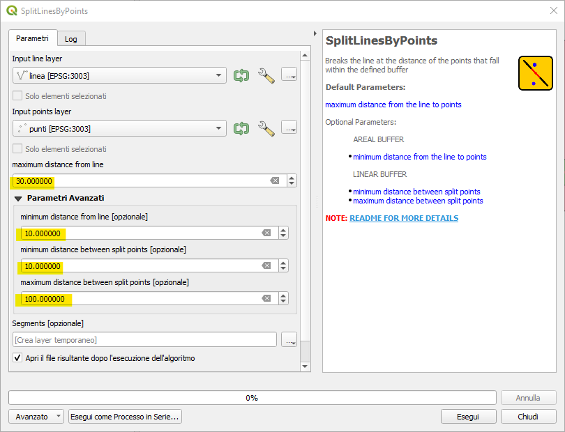

After load you have points, line and buffers layer
Split line with points at distance max 20 meters
Split line with points at distance max 20 meters
Split with point from 20 to 30 meters from line
Split line with points within 20 meters and 30 meters, the highlighted point is a little beyond 20 m
Split line with points within 30 meters and distance between them greater than 10 meters
